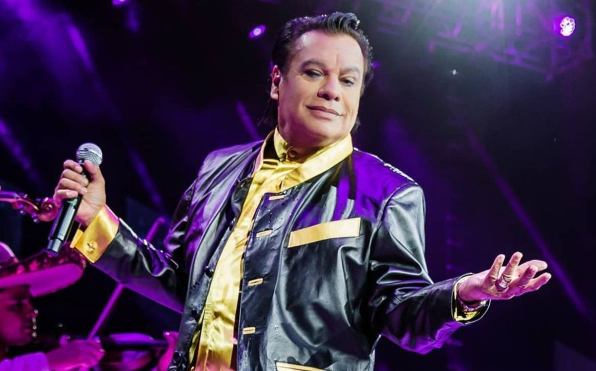

El Divo de Juárez alcanzó el récord de duración de un concierto en este escenario, pues su función del 10 de mayo “rebasó las seis horas”, dijeron representantes. El Auditorio Nacional lo ha reconocido.
Ciudad de México, 29 agosto (dpa).- Autoridades del Auditorio Nacional lamentaron hoy la muerte del compositor mexicano Juan Gabriel, quien impuso el récord del concierto más largo en este escenario, con más de seis horas de duración.
En un comunicado, representantes de ese centro de espectáculos en Ciudad de México, expresaron su consternación a familiares por la muerte de “una de las más emblemáticas figuras de la música popular mexicana contemporánea”.
Las condolencias de los representantes de ese centro de espectáculos se hicieron eco da las expresiones de afecto que ciudadanos y pesonalidades del mundo de la política, la cultura y las artes hicieron a través de las redes sociales por la muerte de Juan Gabriel a los 66 años víctima de un infarto.
Juan Gabriel, quien este 2016 cumplió 45 años de carrera artística, cerró su última gira en este centro de espectáculos con un “sold out” (localidades agotadas) en sus 18 conciertos, realizados entre abril, mayo y septiembre, además de alcanzar el récord de duración de un concierto en este escenario, pues su función del 10 de mayo “rebasó las seis horas”, dijeron representantes.
Algunos de sus mejores albums se convirtieron en unos de los conciertos mas grandes de Juan Gabriel entre ellos estan:
Año
Álbum
Aprobacion
Juan Gabriel en El Palacio de Bellas Artes
1990
95%
Todo
1983
92%
Pensamientos
1986
90%
Recuerdos
1980
93%
Los dúo
2015
90%
Ella
1980
94%
Gracias por esperar
1994
94%
Recuerdos II
1984
98%
Mis 40 en Bellas Artes
2014
88%
Vestido de etiqueta por Eduardo Magallanes
2016
96%
El alma joven
1971
97%
Juntos otra vez
1997
90%
Espectacular
1978
90%
Cosas de enamorados
1982
100%
Los dúo 2
2015
94%

Año
Álbum
Aprobacion
El alma joven II
1972
89%
El alma joven III
1973
90%
10 de los Grandes
1975
97%
Siempre en mi mente
1978
86%
Con tu amor
1981
90%
Abrázame muy fuerte
2000
96%
A Mi Guitarra
1975
95%
Vestido de etiqueta por Eduardo Magallanes
2016
96%
El alma joven
1971
97%
Juntos otra vez
1997
90%
Mis ojos tristes
1978
90%
Te llegará mi olvido
1978
87%
Juan Gabriel con mariachi II
2010
90%
El México que se nos fue
1976
92%
Me gusta bailar contigo
1995
96%
Estos albunes lograron la gran fama de muchos de los conciertos y giras que tuvo Juan Gabriel durante toda su carrera esto debido a que fueron sus mas aclamadas canciones
Uno de los records que fue el de alcanzar la duración de un concierto en este escenario, pues su función del 10 de mayo “rebasó las seis horas”, dijeron representantes. El Auditorio Nacional lo ha reconocido.